flowFun
workflowVignetteUpdated.RmdInstallation
Data used for this vignette is kept in a separate R package,
flowFunData. To install flowFun with built
vignettes, users should run the following code.
install.packages("devtools")
# Install with vignettes
# The package 'flowFunData' must first be installed
devtools::install_github("00berst33/flowFunData")
# Then install flowFun
devtools::install_github("00berst33/flowFun", dependencies = TRUE, build_vignettes = TRUE)Otherwise, to get started with the package more swiftly, the user may
install flowFun without its vignettes.
install.packages("devtools")
# Install without vignettes
# No installation of 'flowFunData', set argument `build_vignettes` to FALSE
devtools::install_github("00berst33/flowFun", dependencies = TRUE, build_vignettes = FALSE)Data Import
Blob Cytometry data often contains millions of cells, so to
facilitate fast and efficient manipulation of these large datasets, this
package implements data structures from the flowWorkspace
package; particularly the cytoframe, cytoset,
GatingHierarchy, and GatingSet.
The cytoframe and cytoset are analogous to
the more well known flowSet and flowFrame
structures, but instead of storing data in memory they store only a
pointer to the underlying data (i.e. they are reference classes). The
size of this pointer is negligible compared to the size of cytometry
datasets, making operations with cytosets and
cytoframes far more memory efficient.
The GatingHierarchy and GatingSet build
upon the cytoset and cytoframe. They store not
just the single cell data, but also samples, groups, transformations,
compensation matrices, and gates, conveniently all in one object. Other
advantages are that they facilitate automatic gating in R, and the
importing of workspaces from external software like FlowJo and Cytobank.
These capabilities will be discussed further below.
Understanding these data structures in detail is not absolutely
required to use this pipeline, but for those that would like to learn
more, see the relevant documentation in flowWorkspace. An
introductory vignette explaining the basics of these objects may be
brought up in RStudio by entering
vignette(package="flowWorkspace", "flowWorkspace-Introduction")
into the console.
Below, we demonstrate how data may be imported into R from two possible sources: a set of FCS files, or a FlowJo/Diva/Cytobank workspace.
Reading in FCS files
Most often, a user has a directory or set of directories containing
FCS files that they would like to import into R. The chunk below
demonstrates how to prepare a set of FCS files as a
GatingSet.
library(flowWorkspace)
library(flowFun)
library(data.table)
# Specify path to .fcs file
dir <- system.file("extdata", "samples", package = "flowFunData")
# Load cytoset from .fcs files
cs <- flowWorkspace::load_cytoset_from_fcs(path=dir, pattern=".fcs", truncate_max_range = TRUE)
# Make GatingSet
gs <- flowWorkspace::GatingSet(cs)First the user specifies the name of the folder containing their FCS
files, which are then loaded into a cytoset with the
function load_cytoset_from_fcs(). This cytoset
is then used to construct a corresponding GatingSet; note
that both objects point to the same underlying data.
Due to their nature as reference classes, working with data in a
GatingSet and/or cytoset requires slightly
more consideration than typical R objects. Our variables gs
and cs point to the same underlying data, so any changes
made to one will also be applied to the other. This concept applies to
any copy or subset of them.
To demonstrate this, we first examine the channel names of the
samples in cs.
# Get cytoset channel names
colnames(cs)
#> [1] "FSC-A" "FSC-H" "FSC-W"
#> [4] "SSC-A" "SSC-H" "SSC-W"
#> [7] "FITC-A" "BB630-A" "BB660-P-A"
#> [10] "BB700-P-A" "BB790-P-A" "APC-A"
#> [13] "Alexa Fluor 700-A" "APC-Cy7-A" "BV421-A"
#> [16] "BV480-A" "BV570-A" "BV605-A"
#> [19] "BV650-A" "BV711-A" "BV750-P-A"
#> [22] "BV786-A" "BUV395-A" "BUV496-A"
#> [25] "BUV563-A" "BUV615-P-A" "BUV661-A"
#> [28] "BUV737-A" "BUV805-A" "PE-A"
#> [31] "PE-CF594-A" "PE-Cy5-A" "PE-Cy5.5-A"
#> [34] "PE-Cy7-A" "Time"Next we change the first channel name and observe what happens to the
column names of gs.
# Change name of first channel in cytoset
colnames(cs)[1] <- "EDIT"
# Print resulting GatingSet column names
colnames(gs)
#> [1] "EDIT" "FSC-H" "FSC-W"
#> [4] "SSC-A" "SSC-H" "SSC-W"
#> [7] "FITC-A" "BB630-A" "BB660-P-A"
#> [10] "BB700-P-A" "BB790-P-A" "APC-A"
#> [13] "Alexa Fluor 700-A" "APC-Cy7-A" "BV421-A"
#> [16] "BV480-A" "BV570-A" "BV605-A"
#> [19] "BV650-A" "BV711-A" "BV750-P-A"
#> [22] "BV786-A" "BUV395-A" "BUV496-A"
#> [25] "BUV563-A" "BUV615-P-A" "BUV661-A"
#> [28] "BUV737-A" "BUV805-A" "PE-A"
#> [31] "PE-CF594-A" "PE-Cy5-A" "PE-Cy5.5-A"
#> [34] "PE-Cy7-A" "Time"We see that despite never directly writing code to change the channel
names in gs, the channel name "FSC-A" has also
been changed to "EDIT".
Without being aware of this property of reference classes, a user
could unknowingly make edits to their underlying data while performing
analysis. However, this error is easily avoided by making a “deep copy”
with the function gs_clone(). The resulting
GatingSet is identical to the one it was made from, other
than the critical difference that it does not point to the same
underlying data. Edits may be made to the clone freely, without the
potential of unintentionally overwriting original data or unsaved
changes.
Users should make a clone of their GatingSet as below
before proceeding with analysis.
# Clone GatingSet
gs1 <- flowWorkspace::gs_clone(gs)Reading in FlowJo workspace
Users with data in FlowJo, Diva, or Cytobank may have interest in the
R package CytoML. Workspaces from these softwares may be
imported into R as a GatingSet, with transformations,
compensations, and gating schemes preserved. This gives users who may
prefer to perform preprocessing steps in one of these programs the
ability to easily move between R and their program of choice.
The code below demonstrates how a user may import a workspace from FlowJo as a GatingSet. All that is required is the path to an XML file.
# Open FlowJo workspace in R from .xml file
flowjo_file <- "path/to/flowjo.xml"
ws <- CytoML::open_flowjo_xml(file)
# Make GatingSet from FlowJo workspace
gs <- CytoML::flowjo_to_gatingset(ws,
path = "path/to/fcs_files")A GatingSet may also be exported as a workspace with the
use of Docker; interested users should see the GitHub repository for
CytoML.
Preprocessing
Once setup files have been cleaned and a compensation matrix has been generated, the next step is to preprocess the raw data. In order, the steps this pipeline implements are as follows:
- Removing margin events (i.e. values that fall outside the range the cytometer should be able to pick up).
- Removing doublets.
- Removing debris.
- Compensating the data.
- Transforming the data.
- Removing dead cells.
Each these steps, other than acquiring a compensation matrix, may be left entirely automated if desired. However, oftentimes parameter tuning is necessary for optimal results. Furthermore, some samples’ data may be distributed in a way that is markedly different from the average, making automated gating ineffective. For this reason the user also has the option of manually drawing gates, either by simply applying the sample one to each sample, or retroactively selecting samples for which the automated gating performed poorly and re-drawing gates as necessary. Although it is implemented, it is recommended to avoid manual gating where possible. Doing so improves the objectivity and reproducibility of the analysis.
This pipeline primarily uses the package openCyto to
implement preprocessing. openCyto can create an automated
gating pipeline using a gatingTemplate, which is specified
by a user-created spread sheet with 10 columns: alias,
pop, parent, dims,
gating_method, gating_args,
collapseDataForGating, groupBy,
preprocessing_method, and preprocessing_args.
To see the details on how the values for these columns should be
entered, see the openCytoVignette in the
openCyto package. flowFun generates a default
gatingTemplate that will draw the basic gates, so most
users only need to understand how to edit this template, and not concern
themselves with making one from scratch.
The function generateGatingTable() creates this default.
It returns a data.table so that the user may make edits
more easily before finalizing the gatingTemplate.
The code below generates a table with the argument
collapse_data set to FALSE, so once the gating
scheme is applied, gates will be uniquely determined for each
sample.
library(openCyto)
# Specify L/D stain
ld_stain <- "BUV496-A"
# Get number of samples in experiment
num_samples <- length(gs1)
# Generate default template
gt_table <- generateGatingTable(gs1, collapse_data = FALSE, ld_stain)
gt_table
#> alias pop parent dims gating_method
#> <char> <char> <char> <char> <char>
#> 1: nonMargins + root FSC-A,SSC-A boundary
#> 2: nonDebris + nonMargins FSC-A gate_mindensity
#> 3: singlets + nonDebris FSC-A,FSC-H singletGate
#> 4: live - singlets BUV496-A gate_mindensity
#> gating_args collapseDataForGating groupBy
#> <char> <lgcl> <int>
#> 1: min=c(0,0),max=c(262143,262143) FALSE NA
#> 2: <NA> FALSE NA
#> 3: <NA> FALSE NA
#> 4: <NA> FALSE NA
#> preprocessing_method preprocessing_args
#> <lgcl> <lgcl>
#> 1: NA NA
#> 2: NA NA
#> 3: NA NA
#> 4: NA NAIt may be helpful to edit gating_args. Again, more
details can be found in the openCyto vignettes, but it is
most relevant to know how to adjust the range that the gate can be drawn
in. How to do so depends on the function being used to determine the
gate, which is indicated in the gating_method column.
For instance, note the gate defined by the first row of
gt_table, whose alias is nonMargins. In the
gating_method column, we see that the value is
"boundary". The parameters that define the range for this
type of gate are min and max. We choose
gating_args="min=c(0,0),max=c(262143,262143)", and as a
result, the gate cannot be drawn outside of the interval [0, 262143] for
FSC-A or SSC-A.
Before applying these gates to the data, the user should supply any compensation matrices and choose whatever transformation they would like to apply. Additionally, if your panel includes a viability stain, it is necessary to specify the corresponding channel, so that dead cells may be gated out accurately.
Below, the compensation matrix is read in, the transformation applied, and the automated gating applied and visualized.
library(ggcyto)
# Make gatingTemplate from gt_table
gt <- openCyto::gatingTemplate(gt_table)
# Compensation matrix csv
comp_mat <- system.file("extdata", "compensation_matrix.csv", package = "flowFunData")
comp_mat <- read.csv(comp_mat, check.names = FALSE)
# Compensate
# !!! Note: The column names of your compensation matrix must match those
# found in your GatingSet.
# Check that that is the case here:
colnames(comp_mat)
#> [1] "FITC-A" "BB630-A" "BB700-P-A"
#> [4] "APC-A" "Alexa Fluor 700-A" "APC-Cy7-A"
#> [7] "BV421-A" "BV480-A" "BV605-A"
#> [10] "BV650-A" "BV711-A" "BV750-P-A"
#> [13] "BV786-A" "BUV395-A" "BUV496-A"
#> [16] "BUV563-A" "BUV615-P-A" "BUV661-A"
#> [19] "BUV737-A" "BUV805-A" "PE-A"
#> [22] "PE-CF594-A" "PE-Cy5-A" "PE-Cy7-A"
colnames(gs1)
#> [1] "FSC-A" "FSC-H" "FSC-W"
#> [4] "SSC-A" "SSC-H" "SSC-W"
#> [7] "FITC-A" "BB630-A" "BB660-P-A"
#> [10] "BB700-P-A" "BB790-P-A" "APC-A"
#> [13] "Alexa Fluor 700-A" "APC-Cy7-A" "BV421-A"
#> [16] "BV480-A" "BV570-A" "BV605-A"
#> [19] "BV650-A" "BV711-A" "BV750-P-A"
#> [22] "BV786-A" "BUV395-A" "BUV496-A"
#> [25] "BUV563-A" "BUV615-P-A" "BUV661-A"
#> [28] "BUV737-A" "BUV805-A" "PE-A"
#> [31] "PE-CF594-A" "PE-Cy5-A" "PE-Cy5.5-A"
#> [34] "PE-Cy7-A" "Time"
compensate(gs1, comp_mat)
#> A GatingSet with 6 samples
# Transform
trans <- flowCore::estimateLogicle(gs1[[1]], channels = colnames(comp_mat))
flowWorkspace::transform(gs1, trans)
#> A GatingSet with 6 samples
# Apply gating scheme
gt_gating(gt, gs1)
## Check one gate for each sample
# nonDebris gate
plotAllSamples(gs1, "FSC-A", "SSC-A", "nonMargins", "nonDebris")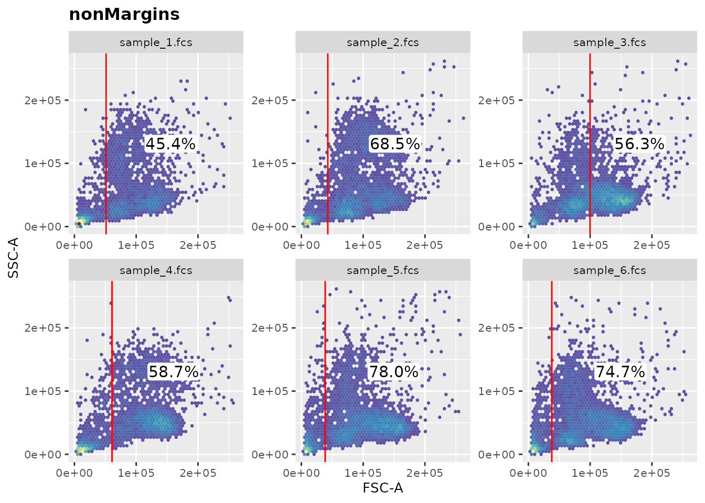
# singlets gate
plotAllSamples(gs1, "FSC-A", "FSC-H", "nonDebris", "singlets")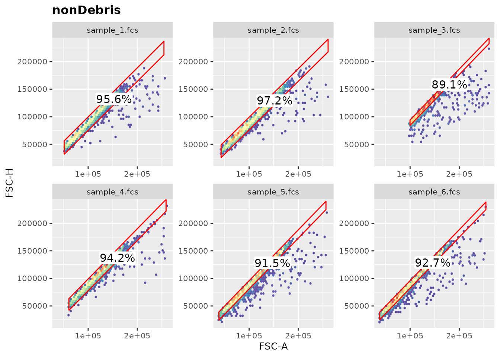
# live cell gate
plotAllSamples(gs1, !!enquo(ld_stain), "FSC-A", "singlets", "live")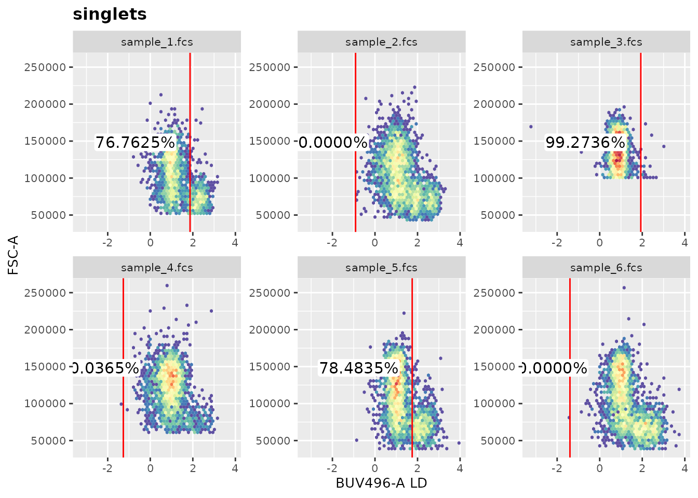
Here we see that the debris gate for the third sample is poorly placed, and multiple gates for live/dead cells need adjustment. The algorithm used to place gates for these populations, `gate_mindensity’, works by fitting a kernel density estimator to the data and finding the two largest peaks. When only one peak is found, or a sample has a more unique distribution, it may not perform as well without some additional arguments. These gates may be fixed with a few different approaches.
The first is to adjust the gatingTemplate. In many
cases, restricting the range in which the gate can be drawn resolves
this kind of issue. To set a minimum and maximum value for a gate drawn
by gate_mindensity, edit the argument
gate_range. Note that making changes to the
gatingTemplate does not immediately affect the
GatingSet it was applied to. First, the old gate(s) and any
associated children must be deleted within the GatingSet
with flowWorkspace::gs_pop_remove() (this does not delete
the gates defined in the gatingTemplate). The new
gatingTemplate can then be applied with
openCyto::gatingTemplate() and the deleted gates will be
redrawn according to the adjustments. The code below demonstrates this
with the data.table created earlier, and plots the new
gates generated after applying the new gating scheme.
# Edit arguments of gate_mindensity
gt_table[2, "gating_args"] <- "gate_range=c(0,80000)" # Set range of debris gate to [0,80000]
# Remove gate(s) that will be redrawn
# Here we delete "nonDebris", which also deletes its children gates (singlets, live)
flowWorkspace::gs_pop_remove(gs1, "nonDebris")
# Generate new gating template
gt <- openCyto::gatingTemplate(gt_table)
# Apply to data
openCyto::gt_gating(gt, gs1)
# Plot new nonDebris gates
plotAllSamples(gs1, "FSC-A", "SSC-A", "nonMargins", "nonDebris")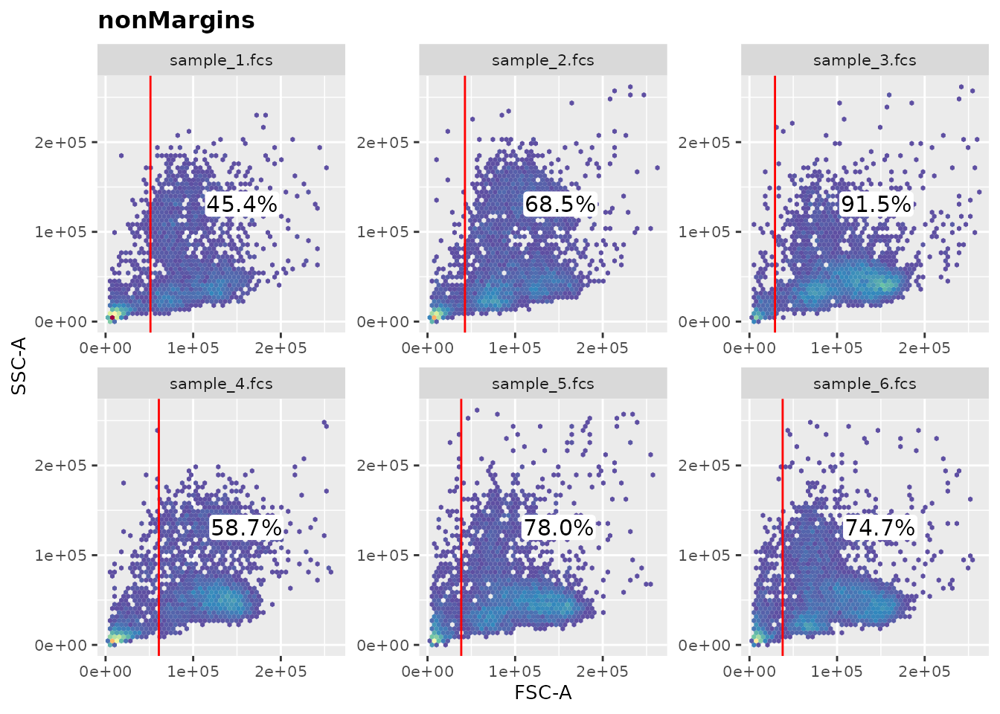
Another option is to draw gates with collapsed data, instead of calculating them per sample. This approach is particularly helpful when the data does not have many cells. It is also more straightforward, since the same gate is applied to each sample. The code below demonstrates this, and generates plots of the new gate for live cells.
# Get new gating table
gt_table <- generateGatingTable(gs1, collapse_data = TRUE, ld_stain)
# Remove gate(s) that will be redrawn
flowWorkspace::gs_pop_remove(gs1, "nonDebris")
# Generate new gating template
gt <- openCyto::gatingTemplate(gt_table)
# Apply to data
openCyto::gt_gating(gt, gs1)
# Plot new L/D gates
plotAllSamples(gs1, !!enquo(ld_stain), "FSC-A", "singlets", "live")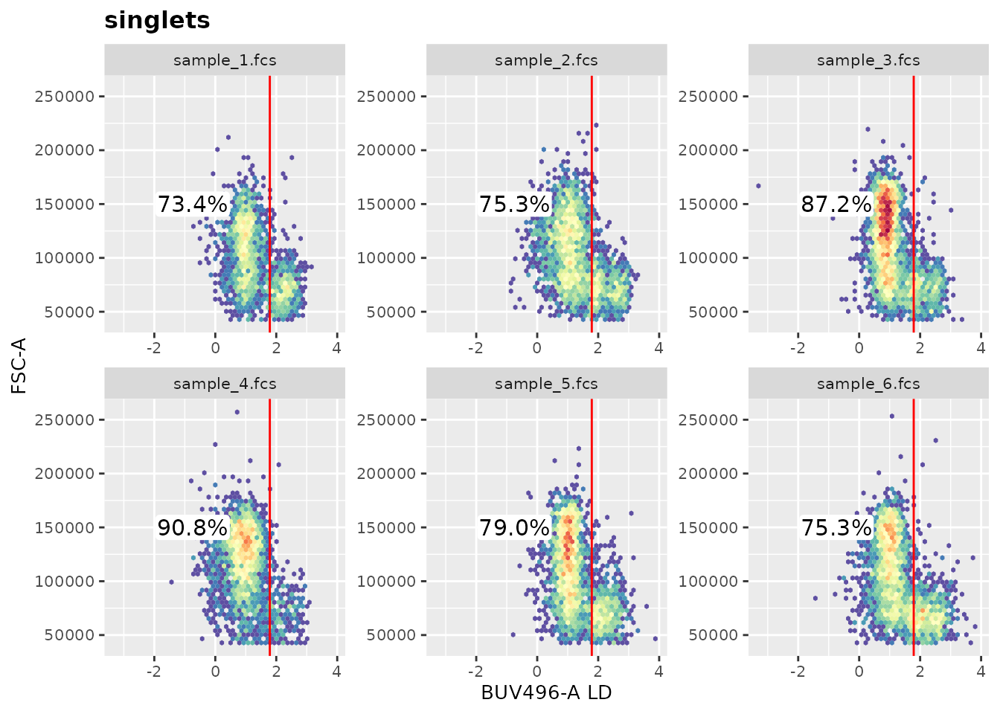
Finally, we may also adjust a gate by manually redrawing it. This can
be done with the function editGateManual(), which
implements CytoExploreR::cyto_gate_draw() for this
pipeline. A window where the user may draw a new gate on the sample(s)
of interest is brought up, and once the gate has been drawn, the given
GatingSet is edited accordingly. An example of how this
function may be used is shown below, where we choose to manually draw
and replace the "live_cells" gate for all samples with a
rectangle gate. Other supported gate types are polygon, ellipse,
threshold, boundary, interval, quadrant, and web; see
?CytoExploreR::cyto_gate_draw() for more details.
### Edit gate for one sample:
# Check gate before:
autoplot(gs1[[3]])
# Example of a call to manually redraw gates; not run
editGateManual(gs1,
node = "nonDebris", # name of population to redraw gates for
gate_type = "rectangle", # type of gate to draw
sample_ids = 1) # vector of sample indices to redraw gates for, default is NULL (all samples)Once preprocessing results appear satisfactory, the user can either
export results to FlowJo using the CytoML package (note:
this requires Docker to be installed) or continue with this pipeline to
cluster data.
It is recommended that the user saves their GatingSet
before continuing. Recall that the earlier preprocessing steps were
performed on a deep copy of the data to make edits more easily
reversible, and avoid accidentally changing the underlying data. At this
point the preprocessing steps are final, and so they should be saved so
that progress is not lost. To save a GatingSet, create a
new folder in an appropriate directory, then call
flowWorkspace::save_gs(). Note that more than one
GatingSet may not be saved to the same directory.
# Specify name of directory to save to
path <- file.path(getwd(), "gating_set")
# Make directory if it doesn't exist
dir.create(path)
# Save GatingSet
flowWorkspace::save_gs(gs1, path = path) # Set `path` to the name of your chosen directoryAfter saving the user may safely close their R session and return
later, if desired. To load a previously saved GatingSet,
use flowWorkspace::load_gs(). The only input necessary is
the name of the folder the GatingSet was saved to.
# Load saved GatingSet
flowWorkspace::load_gs(path)Clustering
This package is compatible with various clustering algorithms, but was designed specifically with FlowSOM in mind due to its fast runtime and tools for data visualization. Therefore, much focus will be given to FlowSOM in the following section.
The strategy for identifying cell type populations outlined by this workflow is not entirely automated, and instead uses a human-in-the-loop approach. Such an approach aims to reduce the burden of analyzing such a large volume of data, while still incorporating expert knowledge to ensure that results are biologically meaningful. To accomplish this, the data is initially overclustered. The expert then examines the result of the clustering through various relevant plots, taking into account not only marker expression but also cluster sizes and mathematical distance, and uses their best judgement to merge clusters until an appropriate final clustering has been reached and labelled.
It is also necessary for the user to specify which markers are to be used for clustering. There are a few considerations to account for when selecting these, the most important being that it is highly recommended that any markers the user intends to test for differential expression are NOT used for clustering. There is a number of reasons for this, but in short, it generally makes little sense to test for differential expression of a marker in a cluster when the cluster is defined by high or low expression of said marker (i.e. testing for differential expression of CD8 in CD8 T cells). Furthermore, parameters like side and forward scatter should not be included, and if a viability stain was used, it should also be excluded.
Below, the preprocessed data from earlier is clustered using the
FlowSOM algorithm via the function flowSOMWrapper(). This
outputs the same table that is given to it, but with the columns
Metacluster and Cluster joined to the right,
giving the results of the clustering. Specifying a seed is optional, but
strongly recommended for the sake of reproducibility.
FlowSOM() does not take GatingSet data
structures as input, so to use this function users should subset their
data to the appropriate population with gs_pop_get_data()
and pass the result to cytoset_to_flowSet(). This table may
then be passed to flowSOMWrapper().
# Read in table
fs <- flowWorkspace::gs_pop_get_data(gs1, y = "live")
fs <- flowWorkspace::cytoset_to_flowSet(fs)
# Define markers/columns to use for clustering
cols_to_cluster <- c("BB700-P-A", "APC-A", "Alexa Fluor 700-A", "APC-Cy7-A", "BV480-A",
"BV605-A", "BV650-A", "BV711-A", "BV750-P-A", "BV786-A", "BUV395-A",
"BUV563-A", "BUV615-P-A", "BUV661-A", "BUV737-A", "BUV805-A", "PE-A",
"PE-CF594-A", "PE-Cy5-A", "PE-Cy7-A")
# Perform clustering
fsom_dt <- flowSOMWrapper(fs,
cols_to_cluster = cols_to_cluster,
num_clus = 25,
xdim = 12,
ydim = 12,
seed = 42)| Metacluster | Cluster |
|---|---|
| 8 | 66 |
| 25 | 138 |
| 3 | 23 |
| 6 | 35 |
| 10 | 85 |
A number of different plots may be generated by this package to aid the user in merging metaclusters, but arguably the most important are heatmaps and dimension reduction plots. Below, a heatmap of MFIs by metacluster is generated.
# Generate heatmap
plotMetaclusterMFIs(fsom_dt)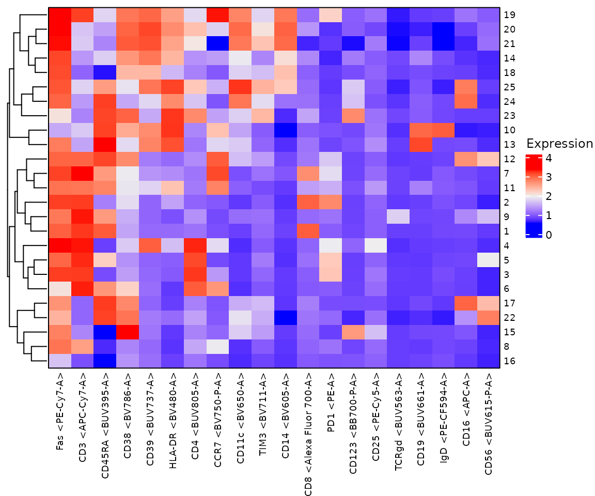
This heatmap is what the user should be using as their main reference when merging metaclusters. The dendrogram on the left-hand side, which displays a hierarchal clustering of the metaclusters, is of particular interest, and this hierarchy may be followed to perform the clustering. However, this dendrogram should not be followed blindly. First, the metaclusters that are determined to be similar by the clustering may not be of biological interest; some cell type markers may be of greater significance than others, and this is something that the clustering does not take into account. Second, dendrograms may be created with different linkage methods (single-linkage, average-linkage, centroid-linkage, etc.), and these different methods may result in slightly different hierarchies. This is not to say that the dendrogram is useless, only that it has its limitations.
The user should also consider cluster size when merging. If a metacluster is rather small, and differs from its neighboring clusters in irrelevant markers, then it is reasonable to merge it. However, if the metacluster is small but distinct in markers of interest, it may be left unmerged.
Finally, if a metacluster does not represent any particular cell type of interest, it may be dropped from the analysis entirely. For example, depending on how strict you were with your gating, there may be some debris remaining in your preprocessed data. The clustering algorithm will likely cluster these together, and you may decide to exclude them from further analysis.
To further aid the decision making process, a UMAP colored by metacluster is generated below.
# Generate UMAP
plotUMAP(fsom_dt, num_cells = 5000, seed = 42)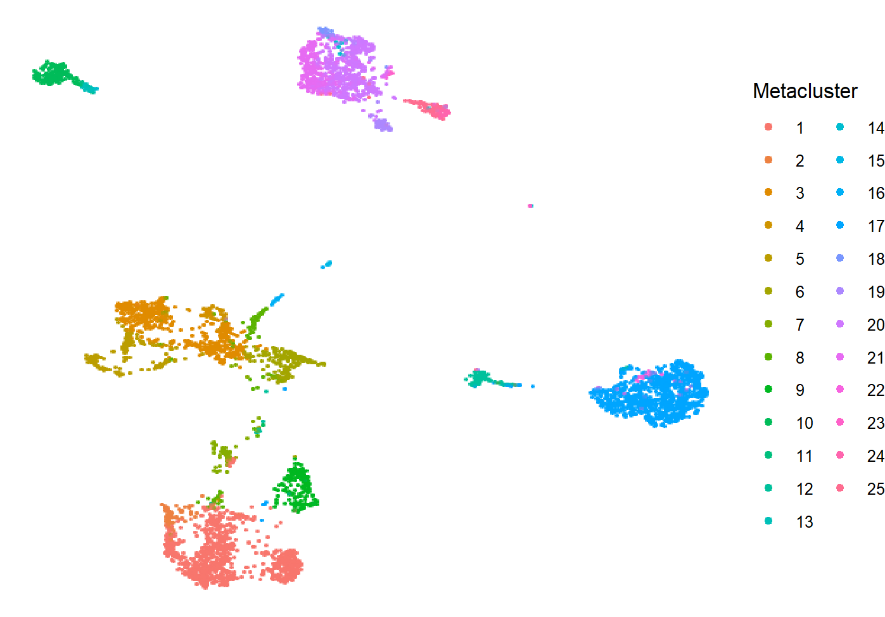
This plot is most useful to check metaclusters’ relative sizes, and how similar they are to one another. The closer clusters (and cells) are to each other, the more similar they are to each other. However, the opposite is not necessarily true.
By examining these plots, it starts to become clear which metaclusters are more similar to one another, and what their phenotype may be. For example, we see that metaclusters 1, 2, and 7 are all somewhat closely linked by the dendrogram in the heatmap, and are rather close to one another in the UMAP. They all have a high expression of the markers CD3 and CD8, but differ noticeably in markers PD1, CCR7, and CD45RA. It seems that these metaclusters are each a subset of CD8 T cells, and it is reasonable to merge them. Depending on the question being investigated, the user may wish to instead keep them separate, and perhaps specify exhausted and non-exhausted CD8 T cells, which could also be reasonable.
It should be noted that if a user does desire to look at a particular cell type in greater resolution, this workflow allows for backgating on and reclustering cells belonging to a particular metacluster; therefore identifying every sub-population of interest is not necessary at this step. For now, this example will find an initial low-resolution clustering.
The function editTableMetaclusters() can be used to
merge and rename metaclusters. A new column, Meta_original,
is added to the given table, specifying the metaclusters that were found
when the clustering algorithm was first called. The existing
Metaclusters column is edited to contain the new
assignments.
# Merge metaclusters
fsom_dt <- editTableMetaclusters(fsom_dt,
new_labels = c("7" = "1",
"2" = "1",
"5" = "3",
"4" = "3",
"5" = "3",
"6" = "3",
"13" = "10",
"22" = "17"))| Meta_original | Metacluster | Cluster |
|---|---|---|
| 8 | 8 | 66 |
| 25 | 25 | 138 |
| 3 | 3 | 23 |
| 6 | 3 | 35 |
| 10 | 10 | 85 |
A new heatmap may be generated to reflect the new clustering, and help decide whether any further merging should be performed.
# Generate new heatmap
plotMetaclusterMFIs(fsom_dt, cols_to_cluster)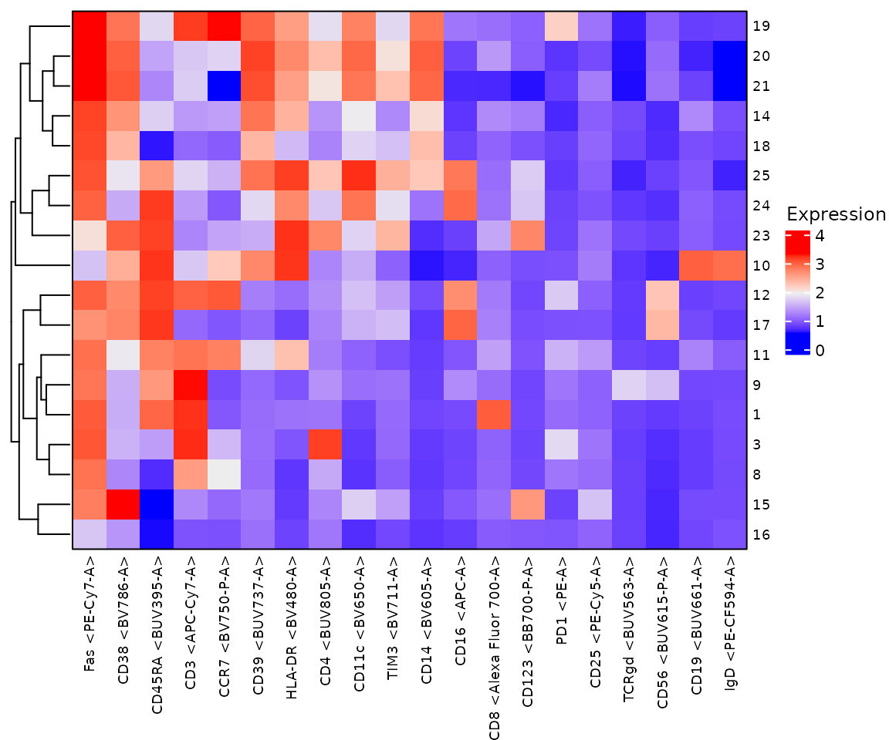
Examining this heatmap suggests that metacluster 9 may be a subset of
gdT cells, but the somewhat low expression of TCRgd makes it difficult
to determine this with much certainty. Sometimes, once the most obvious
merging has been done, UMAPs and MFI heatmaps alone are no longer
sufficient to make informed decisions. Two other notable functions are
provided to give further info about the clusters, the first being
plotClusterMFIs(). It functions almost identically to
plotMetaclusterMFIs(), except that its rows are clusters,
and it may be used to look at the clusters within specific
metacluster(s) of interest via the parameter metaclusters.
This is demonstrated below by calling the function on metacluster 9.
# Generate cluster MFI heatmap
plotClusterMFIs(fsom_dt, cols_to_cluster, metaclusters = 9)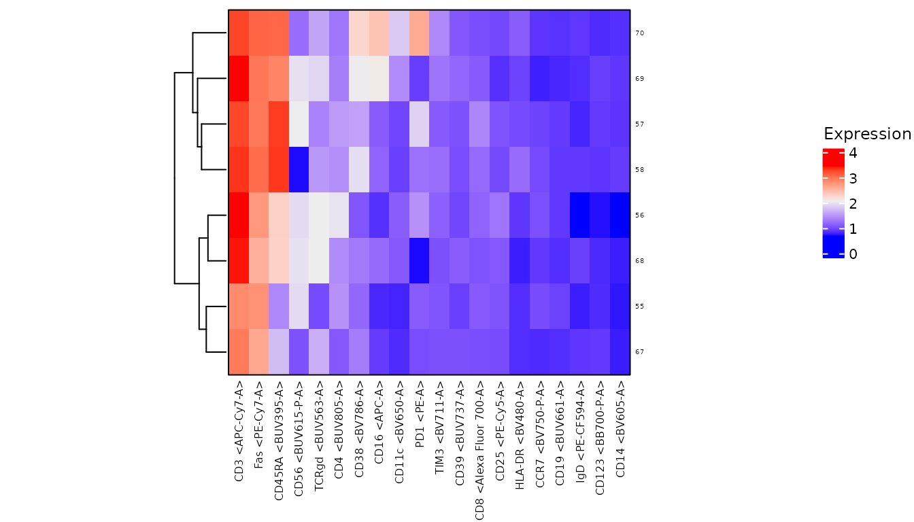
It seems that clusters 55, 57, 58, 69, and 70 have a particularly low
expression of TCRgd compared to other nodes in this metacluster. This
may be further investigated with the second notable function,
plotLabeled2DScatter(). It creates a 2D scatterplot colored
by metacluster, where each cluster center is labeled with its cluster’s
number. Below, this function is called on these five clusters.
# Generate 2D scatterplot
plotLabeled2DScatter(fsom_dt,
channelpair = c("APC-Cy7-A", "BUV563-A"),
clusters = c(55, 57, 58, 69, 70),
metaclusters = NULL)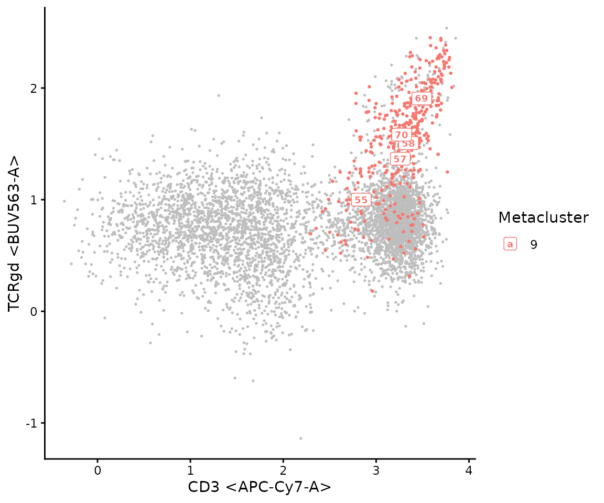
Cluster 55 clearly does not have a high enough expression of TCRgd to
justify classifying it as gdT cells. Additionally, although it has
appropriately high expression of TCRgd, cluster 70 also has high
expression of multiple unrelated phenotyping markers (as seen in the
heatmap), suggesting that it may be a population of cells that were
stuck together. In the next merging step performed below, these clusters
are reassigned to a new metacluster named "Undefined". It
is recommended to avoid reassigning clusters as much as possible, as
doing so increases the subjectivity of the analysis, but it is
ultimately up to the user to determine when this step is
appropriate.
# Merge metaclusters
fsom_dt <- editTableMetaclusters(fsom_dt,
new_labels = c("19" = "14",
"20" = "14",
"21" = "14",
"18" = "14",
"25" = "14",
"16" = "8",
"11" = "8",
"23" = "15"),
cluster_assignments = c("55" = "Undefined",
"70" = "Undefined"))Again, new plots are generated.
# New heatmap
plotMetaclusterMFIs(fsom_dt, cols_to_cluster)
# New UMAP
plotUMAP(fsom_dt, num_cells = 5000, seed = 42)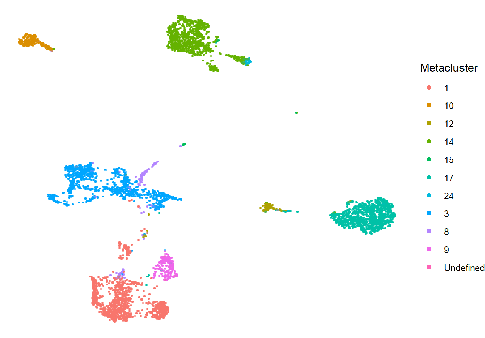
Finally, once the clustering is complete, the remaining metaclusters may be labelled by setting each of them equal to the desired name, instead of another metacluster to be merged into.
# Label metaclusters
fsom_dt <- editTableMetaclusters(fsom_dt, new_labels = c("14" = "Monocytes",
"24" = "cDC",
"10" = "B cells",
"12" = "NK T cells",
"17" = "NK cells",
"1" = "CD8 T cells",
"9" = "gdT cells",
"3" = "CD4 T cells",
"15" = "pDC",
"8" = "Undefined"))
# Generate final heatmap
plotMetaclusterMFIs(fsom_dt, cols_to_cluster)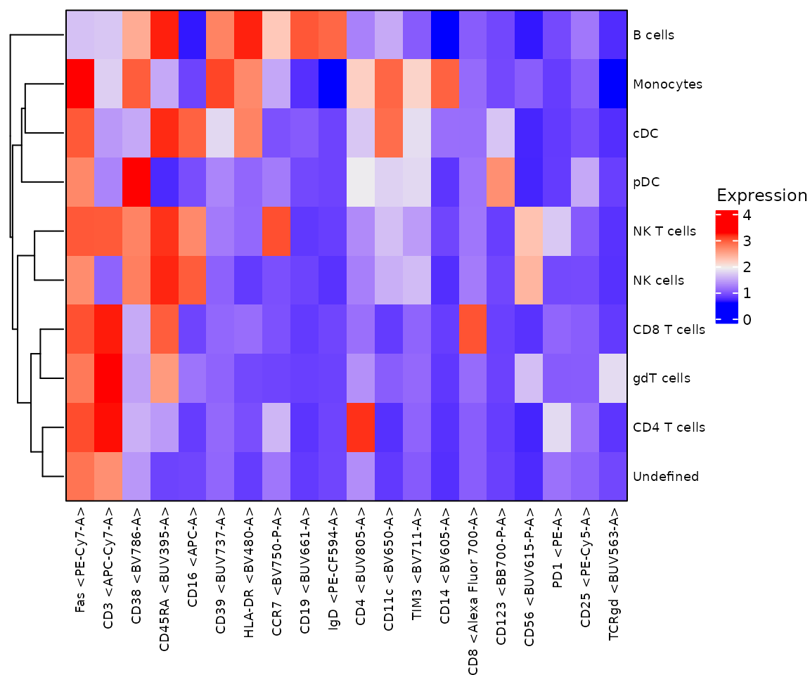
An annotated heatmap displaying the merged clusters may be created
with the function annotateMFIHeatmap().
# Generate annotated heatmap
annotateMFIHeatmap(fsom_dt, cols_to_cluster)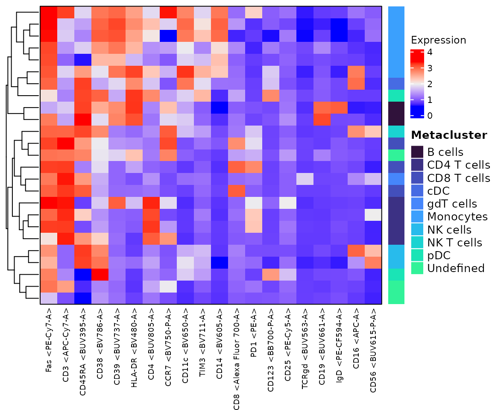
Saving results
The clustering results may now be saved to the GatingSet
created during preprocessing, as a set of boolean gates. This step is
implemented by the function addClustersToGatingSet(), which
needs only three inputs: the data.table resulting from the
clustering step, the GatingSet whose expression data was
used for clustering, and the name of the population/gate in the
GatingSet to add these new gates to.
To see the gates that are currently in a GatingSet, the
user can use the gs_get_pop_paths() function.
# See all populations in GatingSet
flowWorkspace::gs_get_pop_paths(gs1)
#> [1] "root" "/nonMargins"
#> [3] "/nonMargins/nonDebris" "/nonMargins/nonDebris/singlets"
#> [5] "/nonMargins/nonDebris/singlets/live"Note that the function openCyto::plot() used above to
visualize the gatingTemplate may also be used on a
GatingSet or GatingHierarchy object, and may
be helpful in determining the appropriate parent population.
Once the parent population has been determined, the new gates may be
added with addClustersToGatingSet(). Because
GatingSet is a reference class, only the underlying data is
edited and so there is no object returned from the function.
We visualize the results with openCyto::plot():
# Add clusters to GatingSet
addClustersToGatingSet(fsom_dt, gs1, parent_gate = "live")
# Visualize new gating template
openCyto::plot(gs1)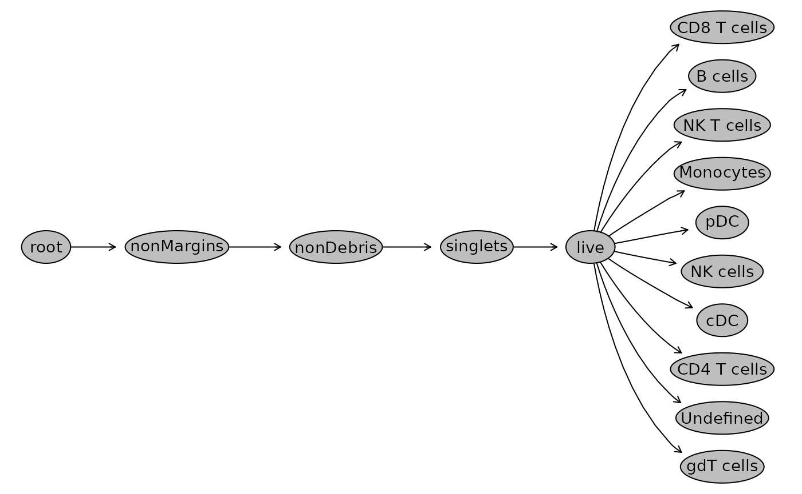
Each cluster created earlier is now saved in the
GatingSet. This is convenient for several reasons. First,
it allows for swift and easy subsetting of the GatingSet by
any combination of clusters. Any function compatible with the
cytoset or flowSet becomes available for these
subsets; in the below example the function
flowWorkspace::gs_pop_get_count_fast() is used to get
frequencies of CD4 T cells and CD8 T cells in each sample.
# Get only CD8 and CD4 T cells in GatingSet
flowWorkspace::gs_pop_get_count_fast(gs1,
subpopulations = c("/nonMargins/nonDebris/singlets/live/CD8 T cells",
"/nonMargins/nonDebris/singlets/live/CD4 T cells"),
statistic = "freq",
format = "long")
#> name Population
#> <char> <char>
#> 1: sample_1.fcs /nonMargins/nonDebris/singlets/live/CD8 T cells
#> 2: sample_1.fcs /nonMargins/nonDebris/singlets/live/CD4 T cells
#> 3: sample_2.fcs /nonMargins/nonDebris/singlets/live/CD8 T cells
#> 4: sample_2.fcs /nonMargins/nonDebris/singlets/live/CD4 T cells
#> 5: sample_3.fcs /nonMargins/nonDebris/singlets/live/CD8 T cells
#> 6: sample_3.fcs /nonMargins/nonDebris/singlets/live/CD4 T cells
#> 7: sample_4.fcs /nonMargins/nonDebris/singlets/live/CD8 T cells
#> 8: sample_4.fcs /nonMargins/nonDebris/singlets/live/CD4 T cells
#> 9: sample_5.fcs /nonMargins/nonDebris/singlets/live/CD8 T cells
#> 10: sample_5.fcs /nonMargins/nonDebris/singlets/live/CD4 T cells
#> 11: sample_6.fcs /nonMargins/nonDebris/singlets/live/CD8 T cells
#> 12: sample_6.fcs /nonMargins/nonDebris/singlets/live/CD4 T cells
#> Parent Frequency ParentFrequency
#> <char> <num> <num>
#> 1: /nonMargins/nonDebris/singlets/live 0.0106 0.3138
#> 2: /nonMargins/nonDebris/singlets/live 0.0690 0.3138
#> 3: /nonMargins/nonDebris/singlets/live 0.0124 0.4768
#> 4: /nonMargins/nonDebris/singlets/live 0.0646 0.4768
#> 5: /nonMargins/nonDebris/singlets/live 0.1206 0.7378
#> 6: /nonMargins/nonDebris/singlets/live 0.1354 0.7378
#> 7: /nonMargins/nonDebris/singlets/live 0.2000 0.5032
#> 8: /nonMargins/nonDebris/singlets/live 0.1028 0.5032
#> 9: /nonMargins/nonDebris/singlets/live 0.1612 0.5550
#> 10: /nonMargins/nonDebris/singlets/live 0.1356 0.5550
#> 11: /nonMargins/nonDebris/singlets/live 0.1962 0.5216
#> 12: /nonMargins/nonDebris/singlets/live 0.1358 0.5216It is also simple to extract a subset of data using one of these gates, and use it to write new FCS files. For example:
# Get cytoset for population of interest
cs_subset <- flowWorkspace::gs_pop_get_data(gs1, y = "NK cells")
# Make flowSet
fs <- flowWorkspace::cytoset_to_flowSet(cs_subset)
# Write new FCS files to disk
flowCore::write.flowSet(fs, outdir = getwd())Recall that the GatingSet includes compensations,
transformations, sample information, metadata, and gating schemes in
addition to the expression data. The goal is to keep all relevant
information about the experiment and its analysis neatly contained
within one lightweight object, so that once it has been created, all
that is necessary to resume analysis is a call to
flowWorkspace::load_gs().
This feature is especially useful when performing a reclustering of the data, or applying control stains, which will be demonstrated further below.
Reclustering
This script also allows the user to perform backgating and reclustering on any identified cell types of particular interest. This clustering may be done using either a selected number of principal components obtained from PCA, or a new subset of markers defined by the user. The former approach is demonstrated below to further investigate the cells identified as CD8 T cells.
# Get table of only CD8 T cells
new_table <- createFilteredAggregate(fsom_dt,
num_cells = Inf,
metaclusters = "CD8 T cells",
clusters = NULL)
#> [1] "sample_1.fcs" "sample_2.fcs" "sample_3.fcs" "sample_4.fcs" "sample_5.fcs"
#> [6] "sample_6.fcs"One an appropriate subset has been created, the next step is to
create a scree plot, which may be used to determine which principal
components should be used in the analysis. Typically, there is a
distinct “elbow” in the plot, where the amount of variance explained by
each component becomes drastically smaller. So, if this elbow appears at
principal component 5, components 1-5 would be selected to recluster the
data. If there is no obvious elbow, it is instead reasonable to use
whichever number of components explains roughly 70-80% of the variance.
First, doPCA() is called to perform PCA. Then,
plotPCAScree() creates the scree plot.
# Perform PCA
pca_obj <- doPCA(new_table, cols_to_cluster)
# Draw scree plot
plotPCAScree(pca_obj)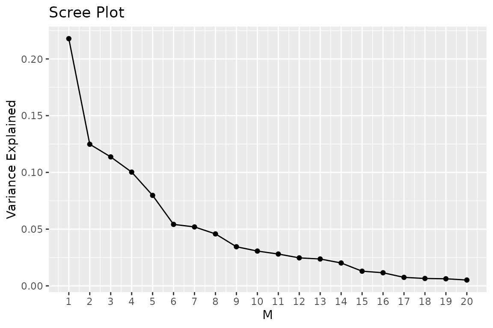
Here, there appears to be a fairly distinct elbow at
M = 6. To recluster using these principal components, the
following call to clusterSubsetWithPCA() is made, with
num_components = 6. Fewer metaclusters are created than in
the initial clustering, as fewer cell types are expected.
# Recluster CD8 T cells
fsom_sub <- clusterSubsetWithPCA(new_table,
pca_obj = pca_obj,
num_components = 6,
num_clus = 15,
seed = 33)Note that the plot functions demonstrated earlier function the same for any subsets created. Since the current cells of interest are CD8 T cells, it is appropriate to define a new subset of markers to create the heatmap.
# Define new columns to use
# cols_of_interest <- c(15, 16, 18, 23:25, 28, 32)
cols_of_interest <- c("APC-Cy7-A", "Alexa Fluor 700-A", "BUV395-A", "BV750-P-A", "PE-A", "BV786-A", "BV480-A", "BUV615-P-A")
# Generate heatmap for subsetted cells
plotMetaclusterMFIs(fsom_sub, cols_of_interest)
# Likewise, generate UMAP
plotUMAP(fsom_sub, num_cells = 5000, seed = 33)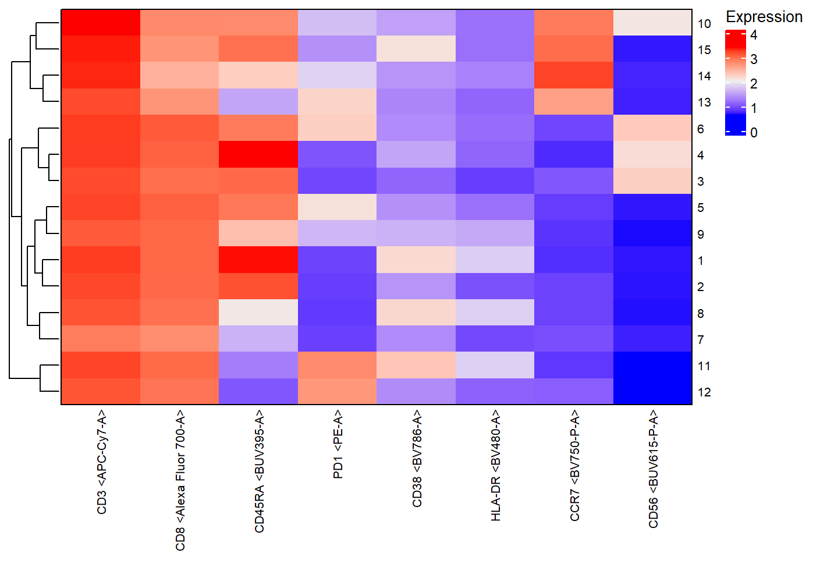
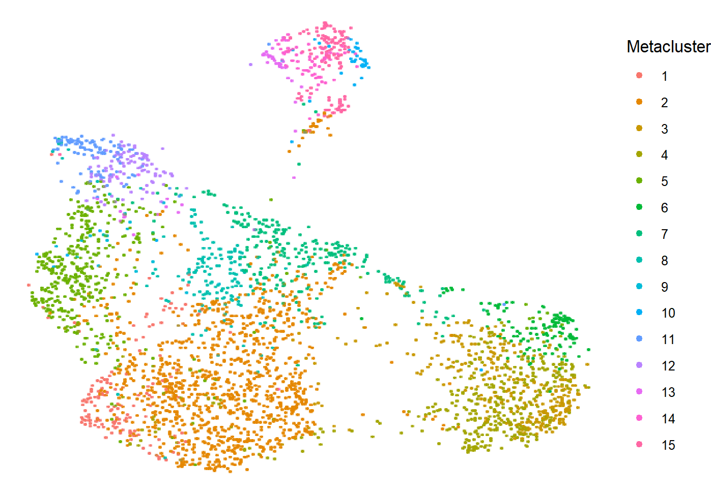
As with the parent population above, metaclusters are merged.
fsom_sub <- editTableMetaclusters(fsom_sub, new_labels = c("1" = "CD45RA+, CCR7-",
"2" = "CD45RA+, CCR7-",
"3" = "CD45RA+, CCR7-",
"4" = "CD45RA+, CCR7-",
"5" = "CD45RA+, CCR7-",
"6" = "CD45RA+, CCR7-",
"7" = "CD45RA-, CCR7-",
"8" = "CD45RA+, CCR7-",
"9" = "CD45RA+, CCR7-",
"10" = "CD45RA+, CCR7+",
"11" = "CD45RA-, CCR7-",
"12" = "CD45RA-, CCR7-",
"13" = "CD45RA-, CCR7+",
"14" = "CD45RA+, CCR7+",
"15" = "CD45RA+, CCR7+"))
# Generate heatmap for subsetted cells
plotMetaclusterMFIs(fsom_sub, cols_of_interest)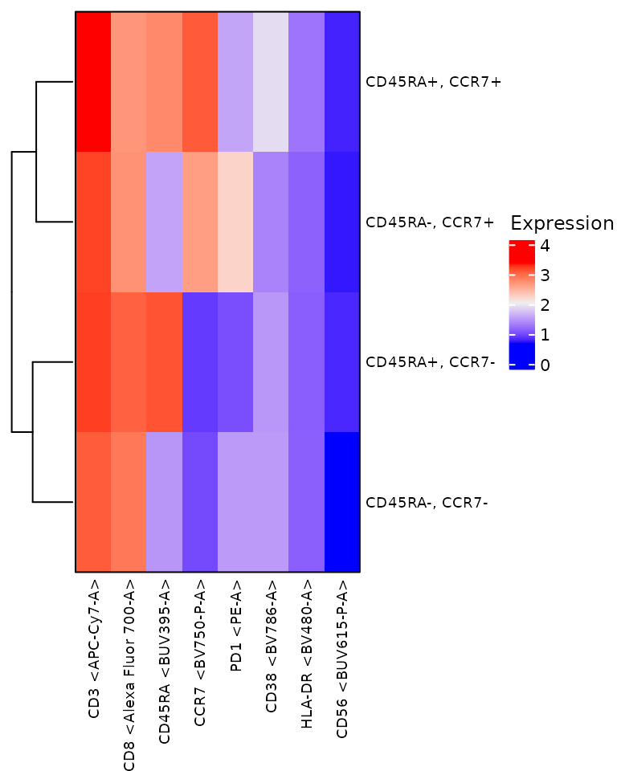
If desired, the clusters found in this subset may overwrite their
parent cluster in the data.table used for the initial
clustering. Meaning, in this case, any cells previously labeled as
"CD8 T cells" will instead be labelled with the more
specific cell type found in the reclustering above. New heatmaps and
dimension reduction plots with the updated labels may then be
generated.
The function overwriteMetaclusterNames() performs this
operation. The code chunk below demonstrates this and generates a new
heatmap.
# Overwrite labels for CD8 T cells with those found in reclustering
fsom_over <- overwriteMetaclusterNames(fsom_dt, fsom_sub)
# Generate new UMAP
# should minimum cell count per cluster be enforced?
plotUMAP(fsom_over, num_cells = 5000, seed = 42)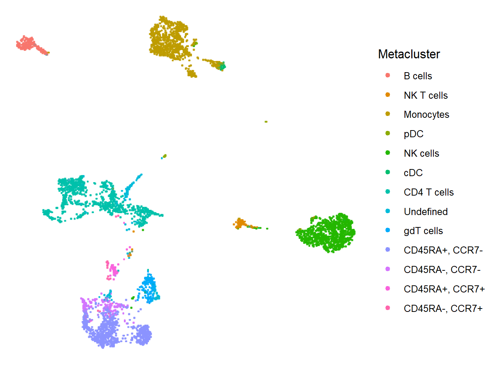
The finalized populations may also be saved to the
GatingSet. In this case, we have a reclustering of the CD8
T cell population, so we call addClustersToGatingSet() with
parent_gate = "CD8 T cells".
# Add clusters to GatingSet
addClustersToGatingSet(fsom_sub, gs1, parent_gate = "CD8 T cells")
# Visualize new gating template
openCyto::plot(gs1)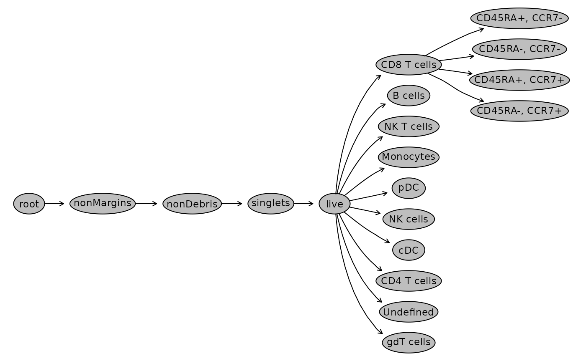
The resulting plot shows each cluster defined so far, and any parent-child relationships.
Differential Analysis
The final analysis step in this workflow is differential analysis. Differential marker expression is implemented using limma, and differential count analysis using edgeR, both R packages found on Bioconductor.
Some preparation is necessary before any tests can be performed.
First, it is necessary to specify information about each sample,
including any FMO or isotype controls, and which groups of interest it
belongs to (e.g. control vs. treatment). This information may be
provided as a .csv file or data.frame to the function
prepareSampleInfo(), which will prepare the table for
further use by the workflow and ensure that its values are R-friendly
(no special characters like @ or #, no empty values, etc.). Below is an
example of what an appropriate .csv file might look like.
| filename | sample.name | disease | NAC | FMO | Isotype |
|---|---|---|---|---|---|
| sample_1.fcs | Ctrl 1 | Ctrl | FMO_sample_1.fcs | Iso_sample_1.fcs | |
| sample_2.fcs | Ctrl 2 | Ctrl | FMO_sample_2.fcs | Iso_sample_2.fcs | |
| sample_3.fcs | MIBC 3 | MIBC | No NAC | FMO_sample_3.fcs | Iso_sample_3.fcs |
| sample_4.fcs | MIBC 4 | MIBC | No NAC | FMO_sample_4.fcs | Iso_sample_4.fcs |
| sample_5.fcs | MIBC 5 | MIBC | NAC | FMO_sample_5.fcs | Iso_sample_5.fcs |
| sample_6.fcs | MIBC 6 | MIBC | NAC | FMO_sample_6.fcs | Iso_sample_6.fcs |
Before calling prepareSampleInfo(), the user must also
specify the comparisons they wish to make between groups, as a series of
nested lists. Each nested list should include at least two levels of a
factor to be used for the comparison. Each comparison may be named
however the user desires, given that it is R-friendly. Below, two
comparisons, ctrl_vs_mibc and nac_vs_no_nac
are defined.
comparisons <- list(
ctrl_vs_mibc = list(disease = list("MIBC", "Ctrl")),
nac_vs_no_nac = list(disease = "MIBC", NAC = list("NAC", "No.NAC"))
)The factor names (which would be “disease” and “NAC” in the above
example), unlike the names of comparisons, should be identical to their
column names in the .csv file or data frame given to
prepareSampleInfo(). Similarly, the factor levels (which
would be “Ctrl”, “MIBC”, “NAC”, and “No NAC” in the above example),
should be listed identical to how they appear in the data frame. Note
how these values match those present in the table just shown.
Once these two items have been specified, the remainder of analysis
is rather straightforward. prepareSampleInfo() is called,
formatting the given table as necessary, and adding a new column called
group.
# Get filepath
file <- system.file("extdata", "sample_info.csv", package = "flowFunData")
# Prepare metadata for further analysis
sample_info <- prepareSampleInfo(file,
name_col = "sample.name",
filename_col = "filename",
comparisons = comparisons)| sample.name | filename | disease | NAC | FMO | Isotype | group |
|---|---|---|---|---|---|---|
| Ctrl 1 | sample_1.fcs | Ctrl | X | FMO_sample_1.fcs | Iso_sample_1.fcs | Ctrl_X |
| Ctrl 2 | sample_2.fcs | Ctrl | X | FMO_sample_2.fcs | Iso_sample_2.fcs | Ctrl_X |
| MIBC 3 | sample_3.fcs | MIBC | No.NAC | FMO_sample_3.fcs | Iso_sample_3.fcs | MIBC_No.NAC |
| MIBC 4 | sample_4.fcs | MIBC | No.NAC | FMO_sample_4.fcs | Iso_sample_4.fcs | MIBC_No.NAC |
| MIBC 5 | sample_5.fcs | MIBC | NAC | FMO_sample_5.fcs | Iso_sample_5.fcs | MIBC_NAC |
| MIBC 6 | sample_6.fcs | MIBC | NAC | FMO_sample_6.fcs | Iso_sample_6.fcs | MIBC_NAC |
Next, the design, contrasts, and count matrices are created. The
current population of interest (in this case, fsom_dt)
should be given to makeCountMatrix(). Furthermore, the
parameter meta_names should be used to specify the
metaclusters to use for analysis. By default, all metaclusters are
included, but if the final merging included an undefined metacluster, or
some are of no interest, it is useful to specify this parameter.
# Generate design matrix
design <- makeDesignMatrix(sample_info)
# Generate contrasts matrix
contrasts <- makeContrastsMatrix(sample_info, comparisons)
# Generate matrix of sample/metacluster cell counts
counts <- makeCountMatrix(fsom_dt,
min_cells = 3,
min_samples = 4)The table of counts is printed below:
| sample_1.fcs | sample_2.fcs | sample_3.fcs | sample_4.fcs | sample_5.fcs | sample_6.fcs | |
|---|---|---|---|---|---|---|
| CD8 T cells | 53 | 62 | 603 | 1000 | 806 | 981 |
| B cells | 176 | 246 | 80 | 54 | 140 | 167 |
| NK T cells | 26 | 82 | 185 | 14 | 51 | 19 |
| Monocytes | 450 | 961 | 376 | 498 | 278 | 427 |
| pDC | 56 | 18 | 23 | 28 | 20 | 15 |
| NK cells | 261 | 615 | 1117 | 234 | 675 | 246 |
| cDC | 24 | 19 | 24 | 29 | 20 | 27 |
| CD4 T cells | 345 | 323 | 677 | 514 | 678 | 679 |
| Undefined | 165 | 48 | 208 | 96 | 43 | 33 |
| gdT cells | 13 | 10 | 396 | 49 | 64 | 14 |
To instead get counts from a GatingSet, the function
flowWorkspace::gs_pop_get_count_fast() with argument
format set to "wide" can also quickly obtain a
count matrix in the necessary format.
# Get counts from GatingSet
gs_counts <- flowWorkspace::gs_pop_get_count_fast(gs1, format = "wide")
gs_counts
#> sample_1.fcs
#> /nonMargins 4971
#> /nonMargins/nonDebris 2338
#> /nonMargins/nonDebris/singlets 2138
#> /nonMargins/nonDebris/singlets/live 1569
#> /nonMargins/nonDebris/singlets/live/B cells 176
#> /nonMargins/nonDebris/singlets/live/CD4 T cells 345
#> /nonMargins/nonDebris/singlets/live/CD8 T cells 53
#> /nonMargins/nonDebris/singlets/live/CD8 T cells/CD45RA+, CCR7+ 9
#> /nonMargins/nonDebris/singlets/live/CD8 T cells/CD45RA+, CCR7- 20
#> /nonMargins/nonDebris/singlets/live/CD8 T cells/CD45RA-, CCR7+ 3
#> /nonMargins/nonDebris/singlets/live/CD8 T cells/CD45RA-, CCR7- 21
#> /nonMargins/nonDebris/singlets/live/Monocytes 450
#> /nonMargins/nonDebris/singlets/live/NK T cells 26
#> /nonMargins/nonDebris/singlets/live/NK cells 261
#> /nonMargins/nonDebris/singlets/live/Undefined 165
#> /nonMargins/nonDebris/singlets/live/cDC 24
#> /nonMargins/nonDebris/singlets/live/gdT cells 13
#> /nonMargins/nonDebris/singlets/live/pDC 56
#> root 5000
#> sample_2.fcs
#> /nonMargins 4971
#> /nonMargins/nonDebris 3411
#> /nonMargins/nonDebris/singlets 3164
#> /nonMargins/nonDebris/singlets/live 2384
#> /nonMargins/nonDebris/singlets/live/B cells 246
#> /nonMargins/nonDebris/singlets/live/CD4 T cells 323
#> /nonMargins/nonDebris/singlets/live/CD8 T cells 62
#> /nonMargins/nonDebris/singlets/live/CD8 T cells/CD45RA+, CCR7+ 18
#> /nonMargins/nonDebris/singlets/live/CD8 T cells/CD45RA+, CCR7- 26
#> /nonMargins/nonDebris/singlets/live/CD8 T cells/CD45RA-, CCR7+ 3
#> /nonMargins/nonDebris/singlets/live/CD8 T cells/CD45RA-, CCR7- 15
#> /nonMargins/nonDebris/singlets/live/Monocytes 961
#> /nonMargins/nonDebris/singlets/live/NK T cells 82
#> /nonMargins/nonDebris/singlets/live/NK cells 615
#> /nonMargins/nonDebris/singlets/live/Undefined 48
#> /nonMargins/nonDebris/singlets/live/cDC 19
#> /nonMargins/nonDebris/singlets/live/gdT cells 10
#> /nonMargins/nonDebris/singlets/live/pDC 18
#> root 5000
#> sample_3.fcs
#> /nonMargins 4943
#> /nonMargins/nonDebris 4438
#> /nonMargins/nonDebris/singlets 4230
#> /nonMargins/nonDebris/singlets/live 3689
#> /nonMargins/nonDebris/singlets/live/B cells 80
#> /nonMargins/nonDebris/singlets/live/CD4 T cells 677
#> /nonMargins/nonDebris/singlets/live/CD8 T cells 603
#> /nonMargins/nonDebris/singlets/live/CD8 T cells/CD45RA+, CCR7+ 62
#> /nonMargins/nonDebris/singlets/live/CD8 T cells/CD45RA+, CCR7- 388
#> /nonMargins/nonDebris/singlets/live/CD8 T cells/CD45RA-, CCR7+ 16
#> /nonMargins/nonDebris/singlets/live/CD8 T cells/CD45RA-, CCR7- 137
#> /nonMargins/nonDebris/singlets/live/Monocytes 376
#> /nonMargins/nonDebris/singlets/live/NK T cells 185
#> /nonMargins/nonDebris/singlets/live/NK cells 1117
#> /nonMargins/nonDebris/singlets/live/Undefined 208
#> /nonMargins/nonDebris/singlets/live/cDC 24
#> /nonMargins/nonDebris/singlets/live/gdT cells 396
#> /nonMargins/nonDebris/singlets/live/pDC 23
#> root 5000
#> sample_4.fcs
#> /nonMargins 4961
#> /nonMargins/nonDebris 3077
#> /nonMargins/nonDebris/singlets 2770
#> /nonMargins/nonDebris/singlets/live 2516
#> /nonMargins/nonDebris/singlets/live/B cells 54
#> /nonMargins/nonDebris/singlets/live/CD4 T cells 514
#> /nonMargins/nonDebris/singlets/live/CD8 T cells 1000
#> /nonMargins/nonDebris/singlets/live/CD8 T cells/CD45RA+, CCR7+ 43
#> /nonMargins/nonDebris/singlets/live/CD8 T cells/CD45RA+, CCR7- 870
#> /nonMargins/nonDebris/singlets/live/CD8 T cells/CD45RA-, CCR7+ 6
#> /nonMargins/nonDebris/singlets/live/CD8 T cells/CD45RA-, CCR7- 81
#> /nonMargins/nonDebris/singlets/live/Monocytes 498
#> /nonMargins/nonDebris/singlets/live/NK T cells 14
#> /nonMargins/nonDebris/singlets/live/NK cells 234
#> /nonMargins/nonDebris/singlets/live/Undefined 96
#> /nonMargins/nonDebris/singlets/live/cDC 29
#> /nonMargins/nonDebris/singlets/live/gdT cells 49
#> /nonMargins/nonDebris/singlets/live/pDC 28
#> root 5000
#> sample_5.fcs
#> /nonMargins 4896
#> /nonMargins/nonDebris 3791
#> /nonMargins/nonDebris/singlets 3513
#> /nonMargins/nonDebris/singlets/live 2775
#> /nonMargins/nonDebris/singlets/live/B cells 140
#> /nonMargins/nonDebris/singlets/live/CD4 T cells 678
#> /nonMargins/nonDebris/singlets/live/CD8 T cells 806
#> /nonMargins/nonDebris/singlets/live/CD8 T cells/CD45RA+, CCR7+ 51
#> /nonMargins/nonDebris/singlets/live/CD8 T cells/CD45RA+, CCR7- 554
#> /nonMargins/nonDebris/singlets/live/CD8 T cells/CD45RA-, CCR7+ 13
#> /nonMargins/nonDebris/singlets/live/CD8 T cells/CD45RA-, CCR7- 188
#> /nonMargins/nonDebris/singlets/live/Monocytes 278
#> /nonMargins/nonDebris/singlets/live/NK T cells 51
#> /nonMargins/nonDebris/singlets/live/NK cells 675
#> /nonMargins/nonDebris/singlets/live/Undefined 43
#> /nonMargins/nonDebris/singlets/live/cDC 20
#> /nonMargins/nonDebris/singlets/live/gdT cells 64
#> /nonMargins/nonDebris/singlets/live/pDC 20
#> root 5000
#> sample_6.fcs
#> /nonMargins 4922
#> /nonMargins/nonDebris 3648
#> /nonMargins/nonDebris/singlets 3464
#> /nonMargins/nonDebris/singlets/live 2608
#> /nonMargins/nonDebris/singlets/live/B cells 167
#> /nonMargins/nonDebris/singlets/live/CD4 T cells 679
#> /nonMargins/nonDebris/singlets/live/CD8 T cells 981
#> /nonMargins/nonDebris/singlets/live/CD8 T cells/CD45RA+, CCR7+ 60
#> /nonMargins/nonDebris/singlets/live/CD8 T cells/CD45RA+, CCR7- 879
#> /nonMargins/nonDebris/singlets/live/CD8 T cells/CD45RA-, CCR7+ 7
#> /nonMargins/nonDebris/singlets/live/CD8 T cells/CD45RA-, CCR7- 35
#> /nonMargins/nonDebris/singlets/live/Monocytes 427
#> /nonMargins/nonDebris/singlets/live/NK T cells 19
#> /nonMargins/nonDebris/singlets/live/NK cells 246
#> /nonMargins/nonDebris/singlets/live/Undefined 33
#> /nonMargins/nonDebris/singlets/live/cDC 27
#> /nonMargins/nonDebris/singlets/live/gdT cells 14
#> /nonMargins/nonDebris/singlets/live/pDC 15
#> root 5000By default, counts for all populations in the gating scheme are
found. However, for differential analysis, only the populations to be
tested should be used. Recall that the populations in a
GatingSet may be checked with
flowWorkspace::gs_get_pop_paths(), and that the full gating
scheme may be visualized with openCyto::plot(). The
function flowWorkspace::gs_pop_get_children() is used below
to retrieve the paths for each cell type found in the first round of
clustering, as they all share the same parent. The count matrix is then
subsetted to the appropriate populations.
# Get paths to cluster populations
subpops <- flowWorkspace::gs_pop_get_children(gs1, y = "live")
# Subset count matrix to only populations of interest
keep_idx <- rownames(gs_counts) %in% subpops
clust_counts <- gs_counts[rownames(gs_counts) %in% subpops, ]
# Ensure columns are in order that matches design matrix
samples <- as.character(sample_info$filename)
clust_counts <- clust_counts[, samples]
rownames(clust_counts) <- sub("^.*/", "", rownames(clust_counts))
clust_counts
#> sample_1.fcs sample_2.fcs sample_3.fcs sample_4.fcs sample_5.fcs
#> B cells 176 246 80 54 140
#> CD4 T cells 345 323 677 514 678
#> CD8 T cells 53 62 603 1000 806
#> Monocytes 450 961 376 498 278
#> NK T cells 26 82 185 14 51
#> NK cells 261 615 1117 234 675
#> Undefined 165 48 208 96 43
#> cDC 24 19 24 29 20
#> gdT cells 13 10 396 49 64
#> pDC 56 18 23 28 20
#> sample_6.fcs
#> B cells 167
#> CD4 T cells 679
#> CD8 T cells 981
#> Monocytes 427
#> NK T cells 19
#> NK cells 246
#> Undefined 33
#> cDC 27
#> gdT cells 14
#> pDC 15Given any matrix of counts, plotSampleProportions()
visualizes cell type proportions across samples.
plotSampleProportions(clust_counts)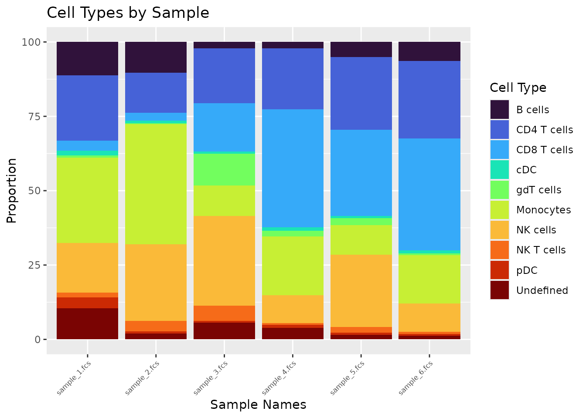
Differential Abundance
Once these matrices have been acquired, to perform differential
abundance analysis, the user only needs to pass them to
doDAAnalysis(), and specify a normalization method, if any.
Results are returned as a list, where each entry is a table
corresponding to a comparison. The tables are named after the comparison
they correspond to, and contain results of likelihood ratio tests
performed by edgeR, with each test being ranked by its adjusted
p-value.
Results are also saved as a .csv file for each comparison in the
directory Analysis Results/edgeR. If running an edgeR
analysis on multiple objects, or running the script multiple times for
any reason, the user may wish to create sub-directories within
Analysis Results/edgeR to stay organized. To do this,
simply set the parameter to a preferred sub-directory name.
# Perform differential abundance analysis
da_results <- doDAAnalysis(design = design,
counts = counts,
contrasts = contrasts,
sample_df = sample_info,
norm_method = "TMM")The resulting individual tables may be accessed with either double
brackets [[]] or $,
e.g. da_results[[1]] or
da_results$MIBC_NAC__vs__MIBC_No.NAC. In this example, two
comparisons were tested, so the resulting list contains two tables:
| logFC | logCPM | LR | PValue | FDR | |
|---|---|---|---|---|---|
| CD8 T cells | 3.6623055 | 17.89559 | 19.2176370 | 0.0000117 | 0.0001166 |
| gdT cells | 2.2784561 | 14.61224 | 7.9828538 | 0.0047222 | 0.0236112 |
| B cells | -1.4097480 | 15.95320 | 4.5262772 | 0.0333782 | 0.1112605 |
| pDC | -1.1579266 | 13.57279 | 2.7638714 | 0.0964147 | 0.2183833 |
| Monocytes | -1.0572831 | 17.74244 | 2.5658820 | 0.1091916 | 0.2183833 |
| Undefined | -0.9770537 | 15.23179 | 2.1096918 | 0.1463688 | 0.2439480 |
| NK T cells | -0.5652026 | 14.36619 | 0.6771558 | 0.4105679 | 0.5157025 |
| CD4 T cells | 0.5717352 | 17.72041 | 0.6714055 | 0.4125620 | 0.5157025 |
| NK cells | -0.2700034 | 17.49211 | 0.1603990 | 0.6887894 | 0.7653216 |
| cDC | -0.0706732 | 13.39673 | 0.0095477 | 0.9221609 | 0.9221609 |
| logFC | logCPM | LR | PValue | FDR | |
|---|---|---|---|---|---|
| gdT cells | -1.9300313 | 14.61224 | 5.4438493 | 0.0196373 | 0.1871219 |
| B cells | 1.5868599 | 15.95320 | 3.7833727 | 0.0517642 | 0.1871219 |
| Undefined | -1.5687720 | 15.23179 | 3.6480008 | 0.0561366 | 0.1871219 |
| NK T cells | -0.7921997 | 14.36619 | 0.9512847 | 0.3293925 | 0.8234813 |
| CD4 T cells | 0.5053760 | 17.72041 | 0.4118722 | 0.5210208 | 0.9758713 |
| pDC | -0.3963277 | 13.57279 | 0.2189696 | 0.6398261 | 0.9758713 |
| CD8 T cells | 0.2728881 | 17.89559 | 0.1206982 | 0.7282784 | 0.9758713 |
| Monocytes | -0.0912682 | 17.74244 | 0.0134538 | 0.9076601 | 0.9758713 |
| cDC | 0.0678355 | 13.39673 | 0.0065959 | 0.9352707 | 0.9758713 |
| NK cells | -0.0237663 | 17.49211 | 0.0009148 | 0.9758713 | 0.9758713 |
Differential Expression
To test for differential expression, the design and contrast matrices must again be specified, in addition to the markers to be tested. Recall that in most cases, these markers should not be the same as those used for clustering.
Before testing, median fluorescent intensities (MFIs) must be found
for the markers of interest. If expression data is in a
data.table format, the function getExprMatDE()
may be used to do so. If using a GatingSet object, the
function gs_makeMFIMatrix() should be used instead.
By default, the data is kept on the scale it was transformed to during preprocessing. If the user prefers output to match the scale of the raw data, inverse transformations should be applied before calculating any aggregate statistics and/or performing tests.
# Define channels of interest
marker_cols <- c("FITC-A", "BV711-A")
# Perform differential expression analysis
de_res <- doDEAnalysis(fsom_dt,
cols_to_test = marker_cols,
design = design,
contrasts = contrasts)
# View results
limma::topTable(de_res)
#> feature MIBC_No.NAC_OR_MIBC_NAC__vs__Ctrl_X
#> 10 NK T cells.TIM3 <BV711-A> -0.21732188
#> 17 gdT cells.PHA-L <FITC-A> -0.20426559
#> 9 NK T cells.PHA-L <FITC-A> -0.09168521
#> 4 CD4 T cells.TIM3 <BV711-A> 0.10286847
#> 16 cDC.TIM3 <BV711-A> -0.24827906
#> 12 NK cells.TIM3 <BV711-A> -0.02201422
#> 20 pDC.TIM3 <BV711-A> 0.01893114
#> 2 B cells.TIM3 <BV711-A> 0.04169904
#> 15 cDC.PHA-L <FITC-A> -0.14705205
#> 11 NK cells.PHA-L <FITC-A> -0.11186719
#> MIBC_NAC__vs__MIBC_No.NAC AveExpr F P.Value adj.P.Val
#> 10 0.32466246 1.363133 4.5323285 0.02619657 0.5239314
#> 17 -0.28085816 2.532910 1.9951677 0.16617913 0.8426767
#> 9 -0.24852449 2.715640 1.2115466 0.32186197 0.8426767
#> 4 -0.02965683 1.055500 1.0567659 0.36904211 0.8426767
#> 16 0.05382806 1.852949 1.0391065 0.37489880 0.8426767
#> 12 0.23954436 1.668804 0.8527753 0.44344263 0.8426767
#> 20 0.38041863 1.905086 0.7483075 0.48792439 0.8426767
#> 2 0.10172796 1.013840 0.7029336 0.50877799 0.8426767
#> 15 -0.03708100 2.762316 0.6766949 0.52128999 0.8426767
#> 11 -0.13311684 2.704831 0.6679475 0.52553722 0.8426767Difference in marker expression between group may also be visualized
with the function plotGroupMFIBars(). To use it, a matrix
of MFIs for the marker of interest should be generated; if data is a
FlowSOM object or data.table do so with
getSampleMetaclusterMFIs(), if data is a
GatingSet do so with
gs_getSampleMetaclusterMFIs().
Note that if input is a GatingSet with transformations
attached, the data may be back-transformed to the linear scale before
the calculation of MFIs or statistical tests.
# Get table with MFIs where rows are sample and columns are metaclusters
plot_mat <- getSampleMetaclusterMFIs(fsom_dt, "BV711-A", sample_info)
# Generate bar plot
plotGroupMFIBars(plot_mat,
sample_df = sample_info,
comparison = comparisons[[1]])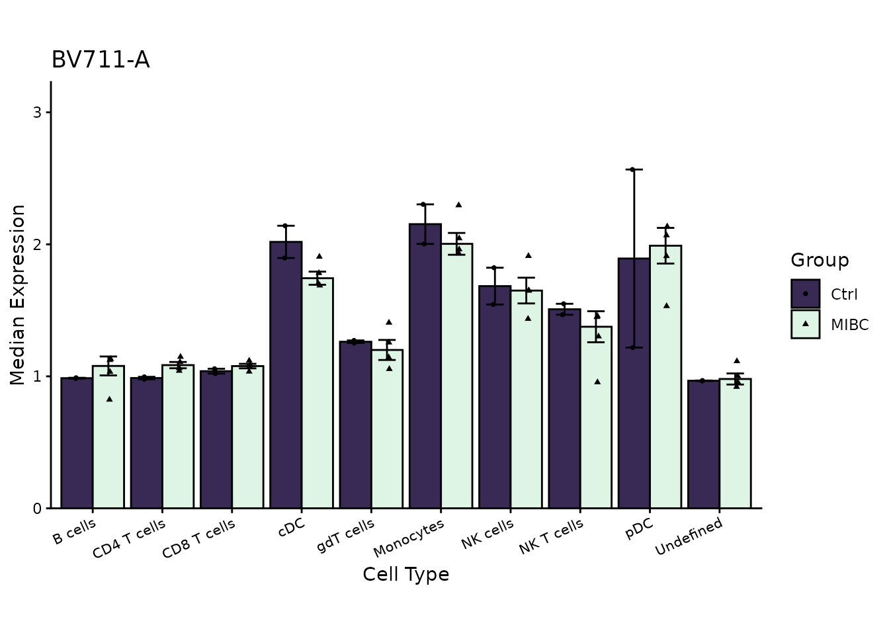
Finally, grouped dimension reduction plots may be generated, colored either by density or marker expression, then compared against their parent plot if one exists.
# Make new parent umap
umap <- plotUMAP(fsom_dt, num_cells = 7500, seed = 42)
# Color by density
plotGroupUMAPs(fsom_dt, sample_info, comparisons[[1]], umap = umap)
# May also color by marker expression
plotGroupUMAPs(fsom_dt, sample_info, comparisons[[1]], color_by = "BV711-A", umap = umap)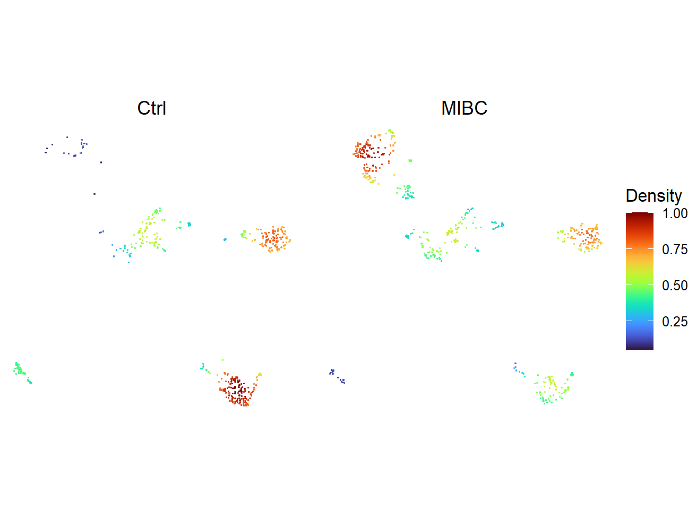
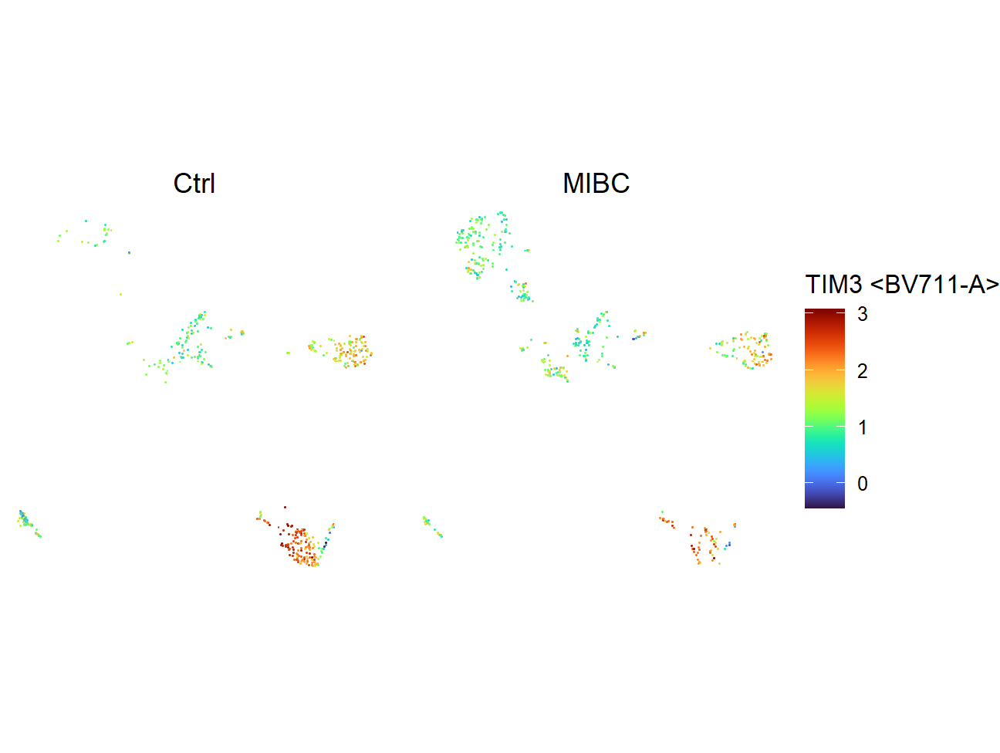
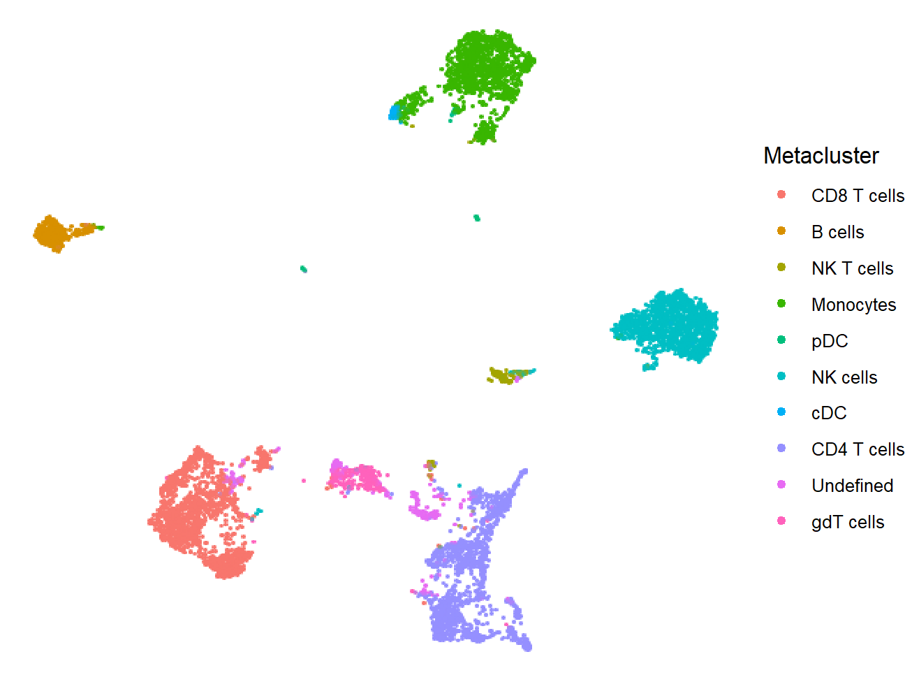